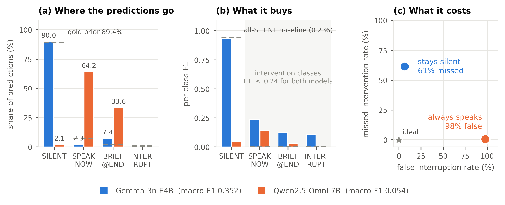
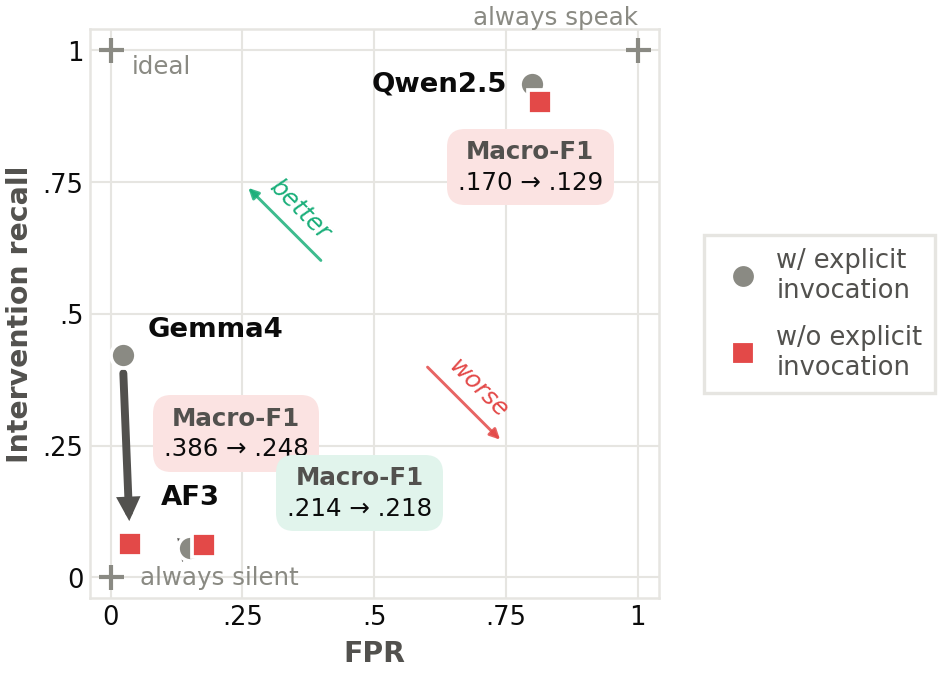
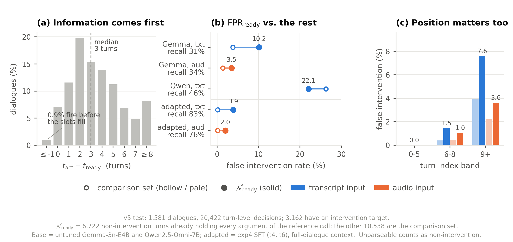
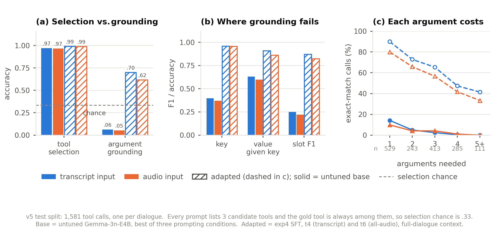
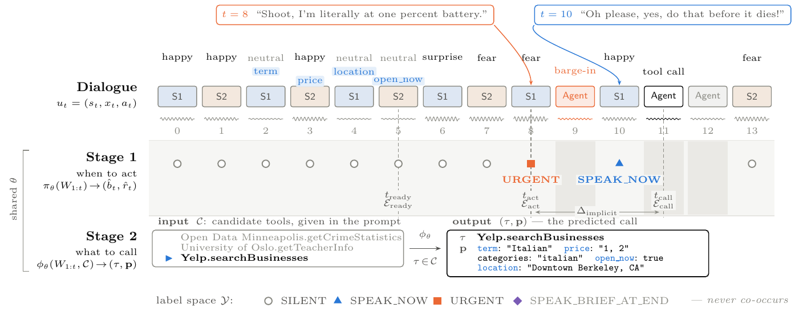

What we found
Four figures, in the order the paper reads them.





Abstract. paste the submitted abstract here — a background voice assistant that overhears a two-person conversation must decide, at every turn, whether to speak at all, and if so what tool call to issue. Neither decision is ever spoken aloud. We formalise this as a two-stage task over conversational speech, release a benchmark of 3,007 emotionally-acted spoken dialogues, and show that off-the-shelf audio language models fail at it in a specific and measurable way.
Not “answer the question”. At each human turn the agent chooses silence or one of three ways to intervene — and 84.5% of the 20,422 test decision points are silence.
Arguments arrive scattered across the dialogue, a median of three turns before the trigger. No user ever says “call the API”, so the model has to notice that it now can.
Adapted models name the right tool on at least 98.9% of calls, yet the best joint-argument accuracy on the same calls is 69.8%. Grounding, not selection, is what the benchmark measures.
Two people talk. An assistant listens without being addressed. At every human turn it makes a Stage 1 decision, and when it acts it must also produce a Stage 2 tool call. The two stages are scored independently at gold anchors, so no number on this page is an end-to-end cascade.

A single JSON object,
{tool_name, call_parameters}, grounded in what was said.
Scored as tool accuracy, slot/key/value P–R–F1, and
params_exact — every argument right, the joint goal accuracy
of this task.
Spoken two-party dialogues with emotionally acted delivery,
each ending in a tool call that nobody asks for. Numbers below are read
straight out of the released splits by
tools/build_data.py.
| Split | Dialogues | Turns | Turns / dialogue | Tools | Categories |
|---|
Every dialogue is tool_call type. Each carries
a category, a candidate-tool set with distractors, an
act_timing (post-turn / end-of-dialogue / interrupt), an
agent behaviour pattern, per-turn emotion and intensity labels, and the
reference call with its simulated response.
| Emotion | Train turns | Test turns | Share (test) |
|---|
Delivery is acted, not annotated after the fact: the text is synthesised with the labelled emotion. A fully neutral resynthesis of the test split — same words, same speaker, same turn order, delivery removed — ships alongside it as a control.
All arms on the same 20,422 Stage 1 decision rows and 1,581 Stage 2 calls of the test split. Audio is how much of the conversation the model hears as speech rather than as transcript; context is how far back the prompt reaches.
| Model | Audio | Context | Acc | Speak P | Speak R | Speak F1 | URGENT F1 | Tool acc | Params exact |
|---|
Acc is 4-way decision accuracy, which an always-silent
policy already scores 0.845 on — read it next to Speak F1, never alone.
Params exact is joint goal accuracy on Stage 2. Best value in
each column is highlighted. Generated from
work/results/exp4_v5t2/*.summary.json; nothing is transcribed
by hand.
Four figures, in the order the paper reads them.




3,007 dialogues with audio, per-turn emotion labels and reference calls, plus the neutral-resynthesis control split. release link
Dataset construction, the two-stage evaluators, and every figure on this page. github.com/ICASSP2027-PACT
Original and neutral-resynthesis pairs for the same turns, so the manipulation can be heard rather than taken on trust. add samples
Every number comes from the run
summaries. After a new arm lands, add one line to ARMS and
re-run:
python tools/build_data.py # -> data/*.json and assets/js/data.js
python -m http.server 8000 # open http://localhost:8000Anonymous while the paper is under review.
@inproceedings{anonymous2027pact,
title = {PACT: {TODO} full title},
author = {Anonymous},
booktitle = {Submitted to IEEE International Conference on Acoustics,
Speech and Signal Processing (ICASSP)},
year = {2027},
note = {Under review}
}